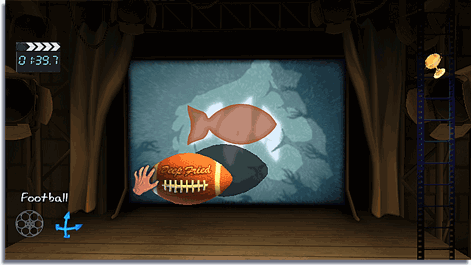
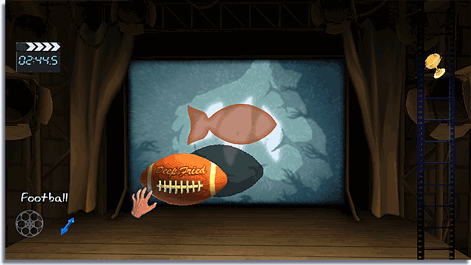
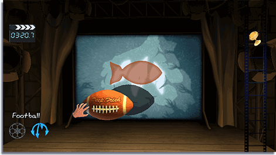

Selon votre degré de réussite pour créer les ombres du casse-tête sans empiéter sur les lignes vous remportez des médailles de bronze, d'argent et d'or. Vous déverrouillerez d'autres casse-têtes ainsi que des objets supplémentaires avec lesquels vous pourrez jouer dans le mode Free Play lorsque vous réussissez des casse-têtes.
Tous les objets utilisés pour créer des ombres sont stockés dans le Film Reel. Vous pouvez en utiliser quelques-uns ou tous, pourvu que vous remplissiez l'ombre cible.
Pointez la manette Wii Remote sur l'objet de votre choix et appuyez sur  pour le sélectionner. Il vous sera désormais possible de faire des expériences avec l'objet dans ce niveau.
pour le sélectionner. Il vous sera désormais possible de faire des expériences avec l'objet dans ce niveau.

Pour déplacer l'objet, pointez sur l'objet en utilisant la manette Wii Remote et maintenez enfoncé , puis bougez la manette Wii Remote.

Pour faire pivoter un objet, sélectionnez l'objet et utilisez le levier de contrôle pour faire pivoter le ballon.
Une fois l'objet sélectionné, maintenez enfoncé. Déplacez le levier de contrôle vers l'avant ou vers l'arrière pour rapprocher ou éloigner l'objet de la lumière. Sur la toile, vous pouvez observer l'ombre grandir ou rapetisser.

Pour faire tourner l'objet, sélectionnez-le, maintenez  enfoncé et utilisez le levier de contrôle pour faire tourner l'objet dans la direction de votre choix.
enfoncé et utilisez le levier de contrôle pour faire tourner l'objet dans la direction de votre choix.

L'indicateur vous montrera le mode que vous avez activé.
Avec l'accessoire Wii MotionPlus, l'objet sélectionné peut être contrôlé en faisant pivoter la manette Wii Remote et

vers le haut ou vers le bas pour rapprocher ou éloigner l'objet de la lumière.
Vous pouvez verrouiller un objet de manière à ce qu'il soit figé sur place. Sélectionnez un objet et appuyez sur

pour le verrouiller, appuyez à nouveau sur
pour le déverrouiller.
Appuyez sur

pour annuler l'action précédente.
Pour remettre un objet dans le Film Reel, sélectionnez l'objet et appuyez sur . Il s'agit d'une option pratique pour réinitialiser un objet.